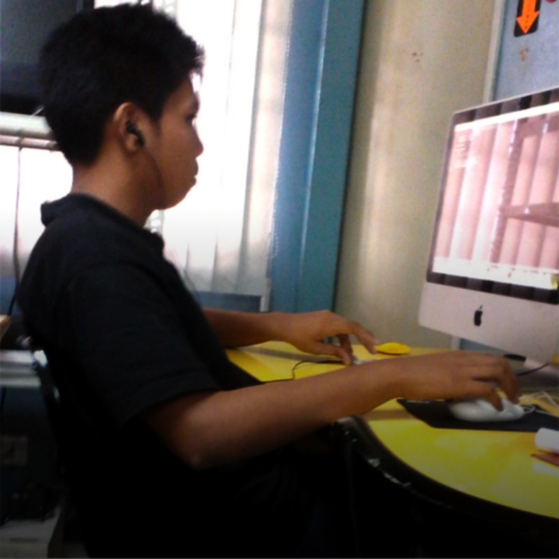

Git Gud or Git Rekt
An Introduction to Git
Sean Francis N. Ballais
http://www.seanballais.com
A Few Notes
- Feel free to interrupt me for questions and clarifications
- Slides available at https://seanballais.com/assets/slides/GitGud/
- Source code available at https://github.com/seanballais/git-gud-lecture-presentation
- High-level overview discussion
- You can reach me through @seanballais, sean@seanballais.com, or MashedPotato (Steam)
Who am I?

Programmer
5+ years

PSHS '15

VCS
- Stands for Version Control System
-
Manages changes of your source code
- "Time machine"
Git
- An open source distributed version control system
- Built in C
- Created by Linus Torvalds in 2005
Why Use Git
(and VCS, in general)
Who Uses Git

Microsoft

Apple
Linux

Twitter

FOSS
Seriously?
and a whole lot more!
Setting up the Environment
- Turn on PC
- Press Power Button
- Wait
- Install Git
- Time to set up GitHub
GitHub